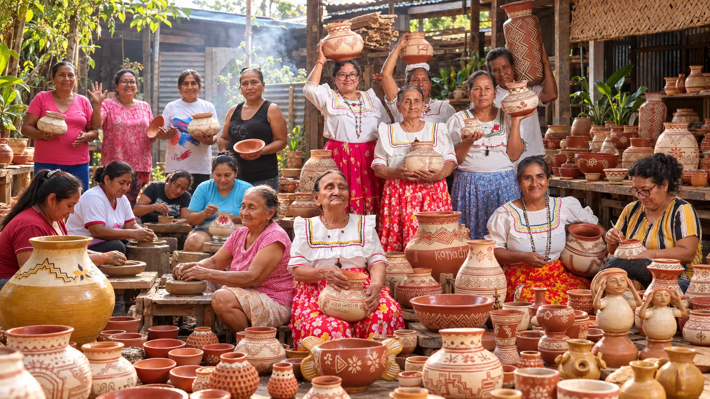

Capacitación artesanal
Desarrollo de talleres orientados al fortalecimiento de las capacidades artesanales de las mujeres participantes.
PROYECTO DESARROLLADO DESDE 2022
Chazuta, San Martín, Perú

El proyecto Conservando la Identidad y los Saberes Ancestrales de la Cerámica Chazutina tiene como propósito preservar y fortalecer las técnicas tradicionales de elaboración de cerámica de Chazuta, en la región San Martín.
A través de talleres de capacitación y fortalecimiento de capacidades artesanales, Acobia Perú trabaja con mujeres de la comunidad, promoviendo la transmisión de conocimientos y la continuidad de esta expresión cultural.
La iniciativa busca contribuir a la conservación de la identidad cultural y al fortalecimiento de los medios de vida de las mujeres participantes.
Preservar y fortalecer las técnicas ancestrales de elaboración de cerámica tradicional de Chazuta, promoviendo la transmisión de conocimientos artesanales y la continuidad de esta expresión del patrimonio cultural.
Desarrollo de talleres orientados al fortalecimiento de las capacidades artesanales de las mujeres participantes.
Fortalecimiento de las técnicas tradicionales de elaboración de cerámica y promoción de su transmisión.
Promoción de la continuidad de la actividad artesanal como expresión de la identidad cultural y fuente de ingresos para las familias participantes.
El proyecto ha trabajado con 10 mujeres de la comunidad de Chazuta, quienes mantienen viva la tradición de la cerámica mediante la elaboración de piezas artesanales de barro.
La iniciativa promueve el fortalecimiento de sus conocimientos tradicionales y la continuidad de la actividad artesanal como parte de su identidad cultural y economía familiar.
De acuerdo con la información proporcionada por Acobia Perú, el proyecto ha beneficiado a 10 mujeres de la comunidad, quienes continúan desarrollando la actividad artesanal como parte de su identidad cultural y economía familiar.
La iniciativa contribuye a la conservación de las técnicas tradicionales de cerámica y al fortalecimiento de los medios de vida de las mujeres participantes.
En Acobia Perú promovemos iniciativas orientadas a la preservación del patrimonio cultural y al fortalecimiento de las capacidades de las mujeres de comunidades locales.
Conoce nuestros proyectos y oportunidades de cooperación para contribuir a la conservación de los saberes ancestrales.
Conocer nuestros proyectos